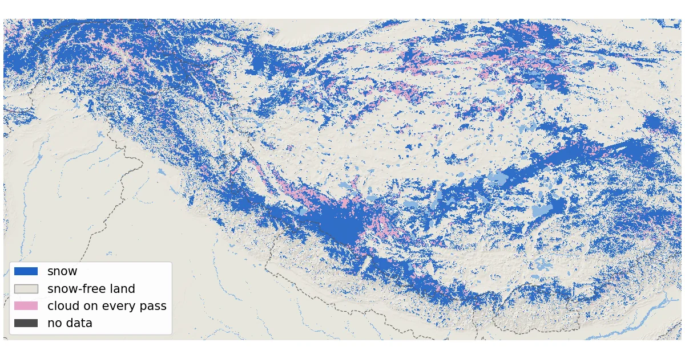
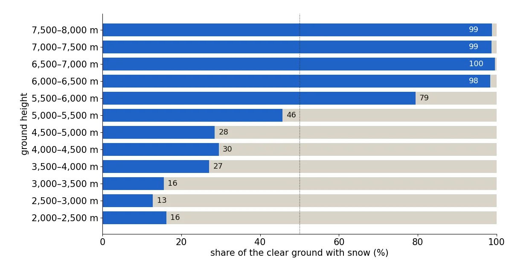
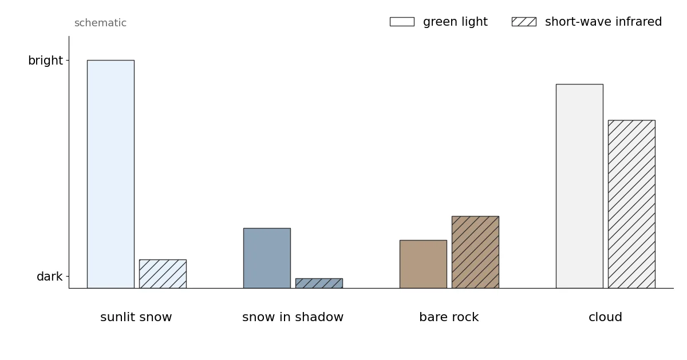

Himalaya snow cover, November 2026: what NASA MODIS saw from the Hindu Kush to Bhutan
The Himalaya is the hardest big mountain range to measure on the ground: few weather stations, huge height differences, steep valleys. From orbit it is one of the easiest. We decoded NASA's daily MODIS snow maps for a box that runs from the Hindu Kush in Afghanistan to Bhutan, including the Karakoram and much of the Tibetan Plateau. Taking the latest clear look at each 500 m pixel between 4 and 13 November 2026, MODIS saw snow on 610,409 km² of ground above 2,000 m, which is 35 % of the ground it could see.
See the live snow forecast for Himalaya in the SnowScope appSnow depth, powder alerts and the 3D map, free.
A fairly clear week, from the west to Bhutan
MODIS flies on NASA's Terra satellite (morning pass) and Aqua (early afternoon pass), with pixels of about 500 m. Unlike the Alps this week, the Himalaya was often clear. With both passes combined, cloud covered 29 % of the mountain ground on 4 November, the clearest of the ten days, 37 % on 8 November and 44 % on 13 November, the most recent day.
Even so, no single day shows everything, so we built a composite. For every pixel we keep the latest day on which Terra or Aqua saw the ground clearly. Clear pixels within 3 pixels (about 1.5 km) of a cloud on the same pass are counted as cloud, because cloud edges are where false snow most often appears. The result is very recent: 55 % of the ground was last seen on 13 November and 16 % on 12 November. Only 5.4 % was hidden by cloud on every pass of the 10 days.
The box runs from 26.5 to 37° N and from 70 to 96° E. We count only ground at 2,000 m or higher (Copernicus GLO-90 heights): 1,832,906 km², a large part of it on the Tibetan Plateau.
Snow by height: the plateau is mostly bare, the peaks are white
The pattern with height is not the simple 'higher is whiter' of the Alps. Between 2,000 and 3,500 m only 13 to 16 % of the clear ground was white. The share then rises to about 27 to 30 % between 3,500 and 5,000 m. That is the height of the Tibetan Plateau, a high, dry, windy surface where November snow is often thin and patchy. Above 5,000 m things change fast: 46 % white between 5,000 and 5,500 m, 79 % between 5,500 and 6,000 m and 98 % between 6,000 and 6,500 m.
The four parts of the range are very different. In our Hindu Kush and Karakoram box (34 to 37° N, 70 to 78° E), 66 % of the clear mountain ground was white and the snow reached down to about 3,600 m, our estimate of the lowest height above which more than half the clear ground is snow-covered. In the western Himalaya box (roughly Himachal, Ladakh and the edge of western Tibet) it was 37 % and about 5,200 m. In the Nepal box, 46 % of the clear ground was white, or 77,804 km², with the line at about 4,800 m. Further east, in our Bhutan box, only 19 % was white and the line sat at about 5,600 m.
These boxes are simple rectangles. The Nepal box (26.4 to 30.4° N, 80 to 88.2° E) also contains bits of India and southern Tibet, so read it as 'the central Himalaya around Nepal', not as Nepal's borders.

How MODIS separates snow from cloud: the NDSI
Snow is very bright in green light but dark in the short-wave infrared at about 1.6 µm, because ice absorbs that light. Most water clouds stay bright in both. The Normalized Difference Snow Index compares the two: NDSI = (green − SWIR) / (green + SWIR), with MODIS band 4 and band 6. A high positive value means snow. NASA's Collection 6.1 algorithm searches for snow wherever the NDSI is above zero, then removes doubtful cases with a series of tests; one of them rejects any NDSI below 0.1.
The product gives each pixel an 'NDSI snow cover' value from 0 to 100. It is not the share of the pixel covered by snow: the user guide states that fractional snow cover is not calculated in Collection 6.1. Here any value from 1 to 100 counts as snow. On Aqua, about 75 % of the band 6 detectors do not work; NASA now rebuilds that band with an image-restoration method, so both satellites use the same band 6 algorithm.

What people on the ground reported
Local reports match the satellite's picture of a fresh snowfall in the west of the range in the last days of the window. In Pakistan, Dawn reported snowfall in the upper areas of Gilgit, Diamer, Ghizer, Astore, Skardu, Hunza and Nagar on Thursday 12 November, with Babusar Pass closed by heavy snow, and heavy snow for a second day in the Kaghan valley of Hazara. In Kashmir, the Kashmir News Service reported on 13 November more than a foot of new snow at Sadhna Top and Razdan Pass and fresh snow at Zojila, Sonamarg, Gulmarg and Gurez. In Himachal Pradesh, India Today reported continuous snow since late Thursday at Shinku La, Baralacha Pass and Kunzum Top and in the higher reaches of Manali. That fits the composite: most of it comes from the 12 and 13 November looks, and the Hindu Kush and Karakoram box is the whitest of our four.
Nepal had its snow earlier. The Rising Nepal reported that snow on 29 to 31 October blocked the Nara Pass road in Humla, in the far north-west, for a week before it was cleared. Six Indian tourists stranded by heavy snow in the Shey Phoksundo area of Dolpa were rescued on 1 November, Rediff reported. For 9 November, Nepal's Department of Hydrology and Meteorology only expected light rain and snow in one or two places in the mountains. That also fits: the big white patch on the map in the north-west of Nepal, and a snow line in the Nepal box higher than in the Karakoram.
These reports confirm where and roughly when snow fell. They give no snow line and no area, so they cannot check our numbers directly, and we found no official snow-cover figure for the region for these dates.
Shadows, low sun and bright clouds over high peaks
In mid-November the sun is low. Using a simple formula for the sun's position, it stands about 43° above the horizon at midday near 28° N (Nepal) and about 35° near 36° N (Karakoram), and lower at the time of the satellite passes. Steep north-facing slopes then sit in their own shadow. In shadow, snow is dark in both bands; the NDSI can still be positive, but the signal is weak. NASA's guide lists low light, shadowed slopes and very low reflectance as known limits, and treats a sun lower than 20° above the horizon (more than 70° from the zenith) as a difficult case. The Himalaya stays above that limit at midday in November; northern Scandinavia, for example, does not.
The high peaks have another problem: they are flagged as cloud more often than the valleys. On Terra's 13 November pass over our Nepal box, 3.9 % of the ground between 2,000 and 4,000 m was marked cloud, 14.7 % between 5,000 and 6,000 m and 26.5 % above 6,000 m. Some of this is real cloud that forms over the summits; some may be the cloud mask confusing bright, cold snow with cloud. That is why the highest heights have fewer clear looks in our composite.
There is no SnowScope snow map for the Himalaya, so unlike our Alps and US posts there is no model to compare with here. The numbers come only from the satellite.
Tips for skiers
- Trekking passes above about 5,000 m in Nepal were mostly white in the latest views: check the local trail reports before you go.
- A white pixel says snow was there on the day of the look, not how deep it is. Depth needs ground reports.
- Shadowed north faces can hide snow from the satellite, so expect more snow on the ground there than the map shows.
More maps (external sites)
References and credits
- Riggs, G.A., Hall, D.K. and Román, M.O. (2019). MODIS Snow Products Collection 6.1 User Guide, version 1.0. NASA / NSIDC nsidc.org/sites/default/files/c61_modis_snow_user_guide.pdf
- Hall, D.K., Riggs, G.A., Salomonson, V.V., DiGirolamo, N.E. and Bayr, K.J. (2002). MODIS snow-cover products. Remote Sensing of Environment 83, 181-194 doi.org/10.1016/S0034-4257(02)00095-0
- Hall, D.K. and Riggs, G.A. (2011). Normalized-Difference Snow Index (NDSI). Encyclopedia of Snow, Ice and Glaciers, Springer doi.org/10.1007/978-90-481-2642-2_376
- NSIDC: MODIS/Terra Snow Cover Daily L3 Global 500m Grid, Version 61 (MOD10A1) nsidc.org/data/mod10a1/versions/61
- NASA EOSDIS Global Imagery Browse Services (GIBS): layers MODIS_Terra_NDSI_Snow_Cover and MODIS_Aqua_NDSI_Snow_Cover (from MOD10_L2 / MYD10_L2, Collection 6.1) and their colour map www.earthdata.nasa.gov/engage/open-data-services-software/earthdata-developer-portal/gibs-api
- Copernicus DEM GLO-90 (European Space Agency, Copernicus programme) doi.org/10.5270/ESA-c5d3d65
- Dawn (13 November 2026): Rain, snowfall disrupt life across GB www.dawn.com/news/2044157
- Dawn (13 November 2026): Mercury drops in KP after snowfall, rain www.dawn.com/news/2044134/mercury-drops-in-kp-after-snowfall-rain
- Kashmir News Service (13 November 2026): Fresh snowfall blankets Kashmir's higher reaches, temperatures dip across Valley www.knskashmir.com/fresh-snowfall-blankets-kashmir-s-higher-reaches--temperatures-dip-across-valley-209084
- India Today (13 November 2026): Himachal sees fresh snowfall, traffic suspended on key passes in Lahaul and Spiti www.indiatoday.in/india/story/himachal-pradesh-snowfall-closes-lahaul-spiti-manali-roads-travel-advisory-ptag-3037935-2026-11-13
- The Rising Nepal (8 November 2026): Blocked Nara Pass opens risingnepaldaily.com/news/88508
- Rediff (2 November 2026): 6 Indian tourists rescued in Nepal after being stranded in heavy snow www.rediff.com/news/commentary/2026/nov/02/6-indian-tourists-rescued-in-nepal-after-being-stranded-in-heavy-snow/24e15c170b9982daa2caf05785741913
- Nepal News (9 November 2026), citing the Department of Hydrology and Meteorology: Light rain and snowfall expected in some areas english.nepalnews.com/s/weather/light-rain-and-snowfall-expected-in-some-areas/
About these numbers
Data: NASA GIBS daily layers MODIS_Terra_NDSI_Snow_Cover and MODIS_Aqua_NDSI_Snow_Cover (built from MOD10_L2 / MYD10_L2, Collection 6.1, near-real-time), 500 m tile set, decoded with the layer's published colour map back to the product values. Snow = 1 to 100, snow-free = 0. Daily: Terra where clear, else Aqua; clear pixels within 3 pixels of cloud on the same pass counted as cloud. Composite: latest clear look per pixel, 4 to 13 November 2026. Areas use the true pixel size at each latitude. Box 26.5 to 37° N, 70 to 96° E, ground at or above 2,000 m (Copernicus GLO-90, read from the open AWS copy). Sub-boxes: Hindu Kush-Karakoram 34-37° N 70-78° E; western Himalaya 30.4-34° N 75-80° E; Nepal 26.4-30.4° N 80-88.2° E; Bhutan 26.7-29° N 88.7-92.2° E. Snow line: lowest 100 m band above which every band with enough clear ground is more than half white. Sun height: 90° minus latitude plus the sun's declination on 13 November (-18.6°), at local noon.
Cite this report
For research, teaching or the press: the numbers and charts are free to reuse under CC BY 4.0 with this citation.
SnowScope (2026), Himalaya snow cover, November 2026: what NASA MODIS saw from the Hindu Kush to Bhutan, https://snowscope.app/blog/en/2026/11/himalaya-snow-cover-november-2026-modis-satellite.html, accessed 2026-11-13
SnowScope (Atlas Labs). (2026, November 13). Himalaya snow cover, November 2026: what NASA MODIS saw from the Hindu Kush to Bhutan. SnowScope snow reports. https://snowscope.app/blog/en/2026/11/himalaya-snow-cover-november-2026-modis-satellite.html
BibTeX
@misc{snowscope2026himalayasnowcovernovembe,
author = {{SnowScope (Atlas Labs)}},
title = {Himalaya snow cover, November 2026: what NASA MODIS saw from the Hindu Kush to Bhutan},
year = {2026},
month = nov,
howpublished = {\url{https://snowscope.app/blog/en/2026/11/himalaya-snow-cover-november-2026-modis-satellite.html}},
note = {Published 2026-11-13 20:43 UTC; accessed 2026-11-13}
}· CC BY 4.0 · Methods, data and tools →
Follow Himalaya
Free: a message when fresh snow is coming, and the forecast every morning.
More snow reports

Our daily table follows the coming snow: the resorts with the most forecast for the next 24 hours and until 12 November, in Europe, Morocco and North …

Where should you be in the next days? Here are the resorts with the most new snow forecast for the next 24 hours and until 11 November, in Europe, …

Today's table ranks the resorts of Europe, Morocco and North America by new snow forecast for the next 24 hours and until 10 November, with the snow …